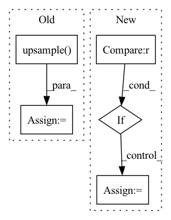

Pattern ID :1709
Before Change
c3 = torch.cat([c2, b3], dim=1)
o3 = self.c3(c3)
out = self.upsample( o3, scale=self.scale)
out = self.exit(out)
out = self.add_mean(out)
After Change
def forward(self, x, scale=None):
if self.scale is not None:
if scale is not None and scale != self.scale :
raise ValueError(f"Network scale is {self.scale}, not {scale}")
scale = self.scale
else:
if scale is None:
raise ValueError(f"Network scale was not set")In pattern: SUPERPATTERN
Frequency: 3
Non-data size: 5
Instances Fragment ID: 6748342
Project Name: coloquinte/torchsr
Commit Name: 8a879bbf29cf0d0029d9931604a4a72c80e95cba
Time: 2021-05-09
Author: gabriel.gouvine_GIT@gmx.com
File Name: models/carn.py
M Class Name: CARN
N Class Name: CARN
M Method Name: forward(3)
N Method Name: forward(2)
M Parent Class: nn.Module
N Parent Class: nn.Module
M File Name: models/carn.py
N File Name: models/carn.py
M Start Line: 217
M End Line: 219
N Start Line: 202
N End Line: 226
Before Change
ph, pw = score.size(2), score.size(3)
h, w = target.size(1), target.size(2)
if ph != h or pw != w:
score = F.upsample(
input=score, size=(h, w), mode="bilinear")
loss = self.criterion(score, target)
return loss
After Change
def forward(self, score, target):
if config.MODEL.NUM_OUTPUTS == 1 :
score = [score]
weights = config.LOSS.BALANCE_WEIGHTS
assert len(weights) == len(score) Fragment ID: 6748343
Project Name: chenjun2hao/ddrnet.pytorch
Commit Name: 3ce340bc520946fb220e83075f6e015bbe87cfe5
Time: 2019-12-12
Author: hsfzxjy@gmail.com
File Name: lib/core/criterion.py
M Class Name: CrossEntropy
N Class Name: CrossEntropy
M Method Name: forward(3)
N Method Name: forward(3)
M Parent Class: nn.Module
N Parent Class: nn.Module
M File Name: lib/core/criterion.py
N File Name: lib/core/criterion.py
M Start Line: 20
M End Line: 28
N Start Line: 36
N End Line: 42
Before Change
c3 = torch.cat([c2, b3], dim=1)
o3 = self.c3(c3)
out = self.upsample( o3, scale=self.scale)
out = self.exit(out)
out = self.add_mean(out)
After Change
def forward(self, x, scale=None):
if self.scale is not None:
if scale is not None and scale != self.scale :
raise ValueError(f"Network scale is {self.scale}, not {scale}")
scale = self.scale
else:
if scale is None:
raise ValueError(f"Network scale was not set") Fragment ID: 6748338
Project Name: coloquinte/torchsr
Commit Name: 8a879bbf29cf0d0029d9931604a4a72c80e95cba
Time: 2021-05-09
Author: gabriel.gouvine_GIT@gmx.com
File Name: models/carn.py
M Class Name: CARNM
N Class Name: CARNM
M Method Name: forward(3)
N Method Name: forward(2)
M Parent Class: nn.Module
N Parent Class: nn.Module
M File Name: models/carn.py
N File Name: models/carn.py
M Start Line: 304
M End Line: 306
N Start Line: 295
N End Line: 320